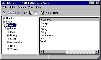

自从Windows 98问世以来,它那可爱的界面深受大家欢迎,不过,当你在使用它时,难免有一些愿望,比如修改开机时的Logo画面,拥有自己特色的Logo画面,这就需要我们动手DIY啦,现在我就介绍一个修改Windows 98外观的方法。
首先,我们需要一个资源编辑软件,如Exescope、Symantec公司的ResourceStudio等。我个人认为Exescope较易上手，文件虽小但功能并不弱 (Exescope在《电脑报》1999年配套光盘第二期有收录,在http:／／member.netease.com／～topage／上也可下载)，它是一个资源编辑软件,能编辑Windows 98标准的资源，包括图标、光标、位图、对话框、菜单、快捷键、串、信息表和其他资源如Delphi表单、WAV、MIDI、AVI、JPEG。
Windows 98的“开始”菜单,虽说是整个桌面的重点,但你可以把那些名字改成你喜欢的文字,如：将“程序”改成“我的小东东”。下面就以修改Windows 98的“开始”菜单举例如下：
1． 先将Windows 98文件夹里的C:\Windows\Explorer.exe拷贝成另外一个文件,如C:\me.exe,然后运行Exescope(注意：在编辑资源之前，你必须备份原始文件，如果编辑后的可执行文件工作不正常则可利用备份恢复)。
2． 点击“File”,选择“Open”,打C:\me.exe,这时你会看到如Windows
98的注册表编辑器一样的界面,有Header、Import,还有一个Resource,不管头两个,第三个才是我们的目标,点击Resource左边的“＋”号,下面的分支就是Explorer.exe的资源信息,包含有图标、位图、对话框、菜单和版本信息等（如图）。我们要修改的便是Menu,Dialog和String三项,分别点击它们,你会看到一些数字,用鼠标右键点一下右边框内的文字,选Edit就可以实现我们的目的了,由于我们要改“程序”为“我的小东东”,用鼠标右键点一下“程序”,选“Edit”,将它该为“我的小东东”,不过,在改的时候要小心,不要改到左边的数字,如：“504,程序(＆P)”,你只需改“程序”二字就行了,不要改那“504”,下面还有许多东西可以任你修改，就看你的了。
3． 改完之后保存,再用C:\me.exe 覆盖C:\Windows 98\explorer.exe,重启后再进入Windows 98时,你会发现你的“开始”菜单已是自己的风格了。
假如你还对Windows 98 的其它信息感兴趣,如：Windows 98的标准菜单,“排列图标”等,你也可试着用Exescope修改C:\Windows\system\shell32.dll或Shell.dll等文件(记得要先备份,否则可能会造成无法启动你的计算机),你也可以打开Regedit.exe或Notepad.exe等,将“注册表编辑器”和“记事本”等界面改成你自己喜欢的样式,还可以打开Windows 98目录内扩展名为cpl的文件,它们是在控制面板里面的各个项目,你也可换换口味.总之,你可以将Windows 98里面大多数你能看到的文字换成你自己的风格。这样,当你重启你的计算机后,你就已经把你的Windows 98彻底DIY啦。
(SoftDIYER)
|